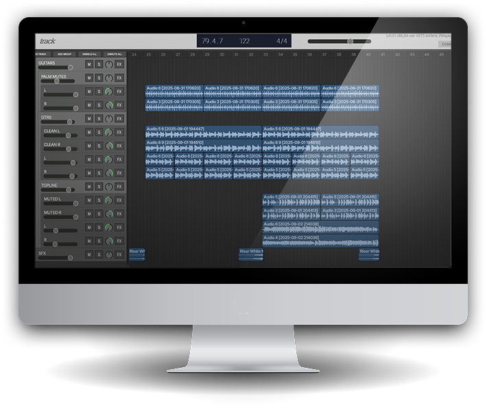

track
About
Features
Install

This is
track
.
Get past that 8 track limit in your DAW.
track is free plugin developed as
a workaround to track count limits in major DAWs
like Ableton Live Lite.
To get start using track,
add the plugin to any track within your host DAW
—you now have a mini DAW in a plugin.
You can
create tracks to play audio clips
, as well as
host other plugins
with delay compensation.